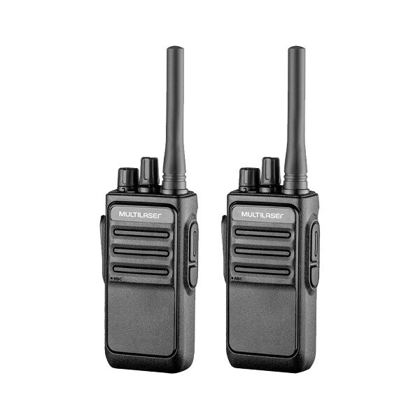

Vecna e o vilão principal de Hawkins ele tem poderes psiquicos que controla as pessoas ele consegue acessa a mente das pessoas e lá casa elas.
Para conseguir escapar do Vecna o princípal a se fazer é estar sempre com um fone de ouvido, escutar a sua música favorita e amigos para te ajudar 🕰 🎧



Para criar uma tag no Mundo Invertido utilize <hr>
© NetFlix